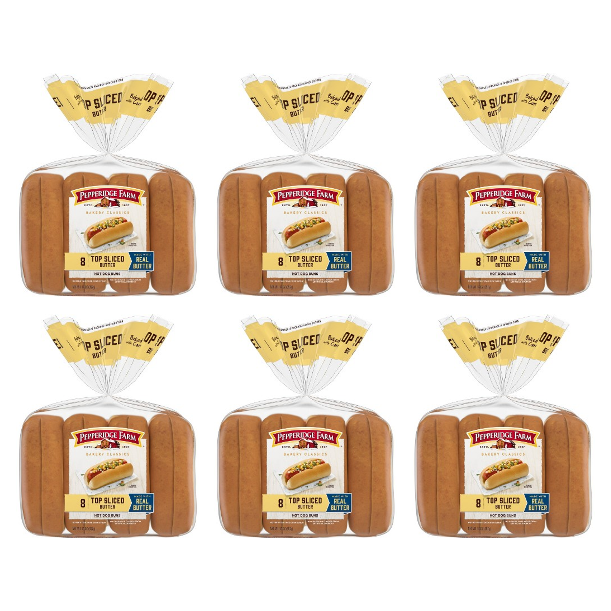
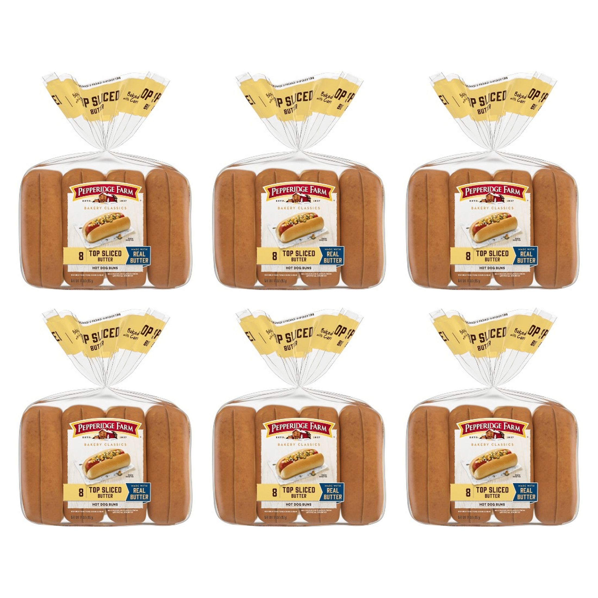
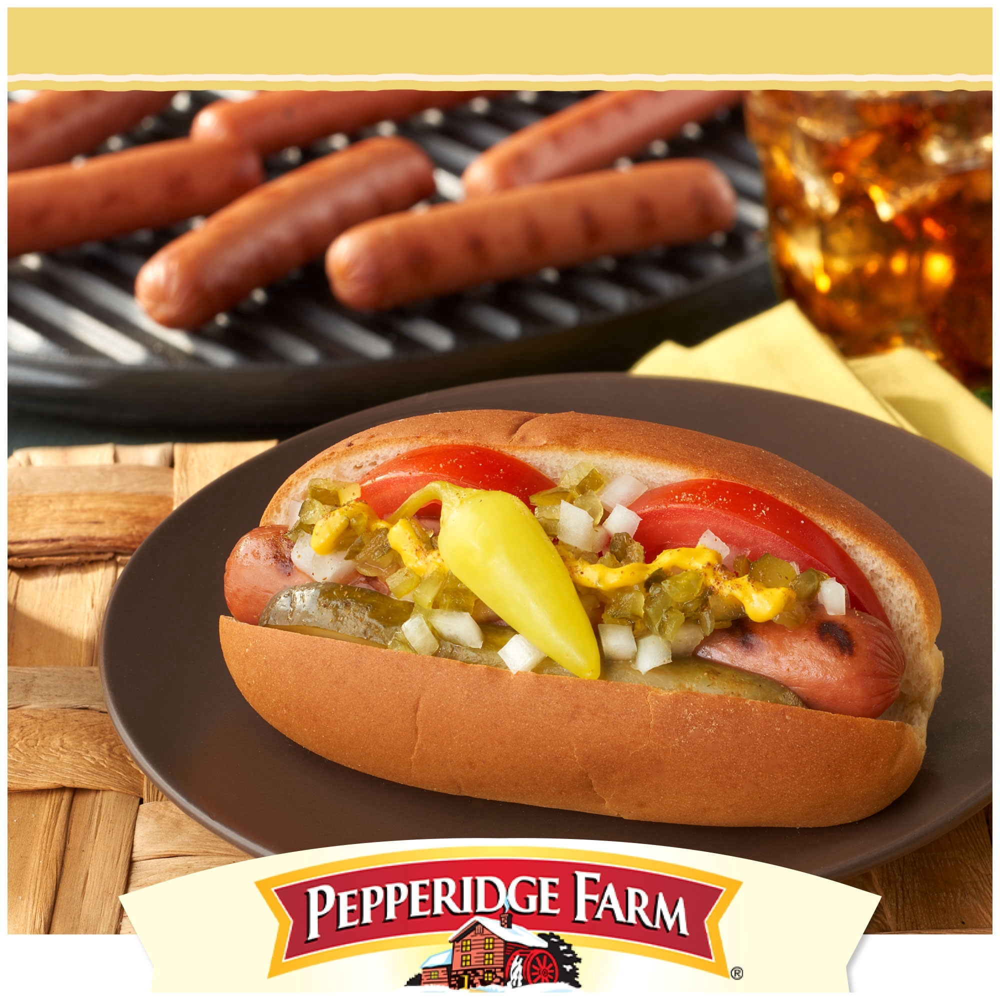
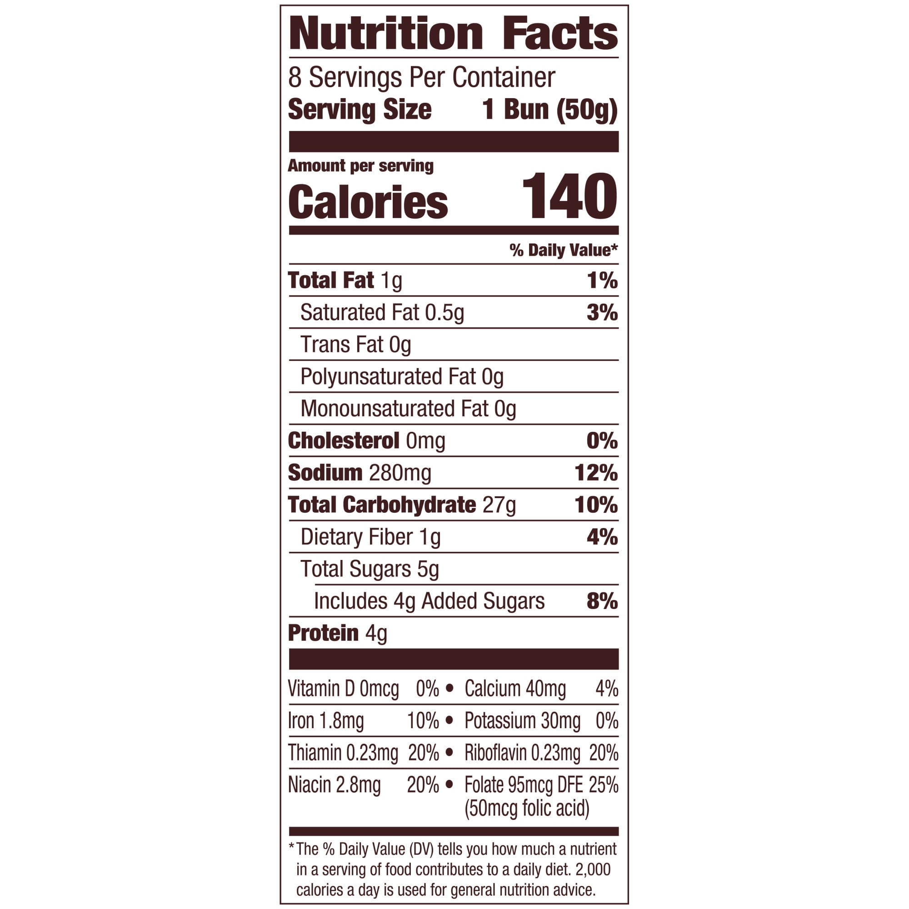

Пять реальных Walmart SKU проверены по seller item, catalog item, buyer PDP,
MAIN, всей gallery и подписанным blind-наблюдениям. Это диагностическая галерея:
она не утверждает, что Product Truth готов, и не разрешает публикацию.
Критически важно: в рамках этой калибровки выполнено
0 Walmart writes. Для FaisalX-1183 исторический «До» и ранее
одобренная proposed MAIN показаны рядом со свежей live MAIN. Текущая live MAIN
визуально совпадает с proposed (dHash distance 0), но происхождение live-изменения
frozen writer receipt не доказано — поэтому ниже нет заявления «движок опубликовал».
5успешных live-наблюдений
2явных текстовых противоречия
3без найденных противоречий
0Product Truth PASS
0Walmart writes
FaisalX-1183 · Walmart item 8419413379
Историческое исправление MAIN и новый текстовый дефект
CONTRADICTION
Live title: Pepperidge Farm Butter Hot Dog Buns, Top Sliced,
8-Ct Bag (Pack of 6)
Историческое ДО
Одна упаковка при title Pack of 6 · fc49a951…

Ранее одобренная proposed MAIN
Шесть точных упаковок · faebb77f…

Свежая live MAIN
Шесть упаковок; dHash = proposed · c6418095…

Live gallery 1Lifestyle · 90279ca5…

Live gallery 2Nutrition Facts · bdc800e7…
Найдено движком: title и изображения говорят
hot dog buns, а bullet 3 говорит
“Pepperidge Farm hamburger buns…”.
Это самостоятельное live-противоречие, но безопасный текстовый repair
остаётся заблокирован до exact Product Truth.
Тесты 20/20; golden replay v5: 12/12 BAD и 12/12 PASS.
Transport unknown outcome
ЗАКРЫТО
Теперь сохраняется terminal UNKNOWN_OUTCOME; replay запрещён.
Repair + fresh reread + Qualification
OFFLINE ГОТОВО
Closed-loop tests 10/10, но ещё нет доказанного live canary этого frozen процесса.
Exact Product Truth для показанных SKU
НЕ ГОТОВО
Listing scopes/recipes не зарегистрированы; self-consistency не может разрешить write.
Массовый запуск
NO-GO
До одного полного live canary и 2–3 последовательных Qualification PASS.
Athar-1591 исключён: точный vision call был зарезервирован сервером, но ответ
не получен локально. Статус UNKNOWN_OUTCOME, автоматический повтор запрещён.